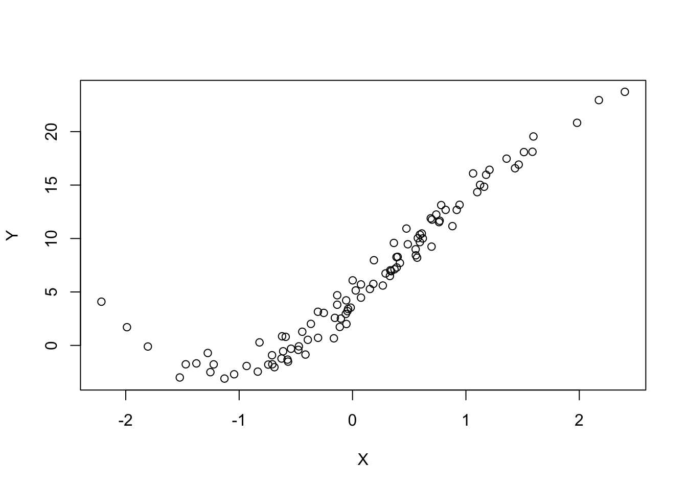
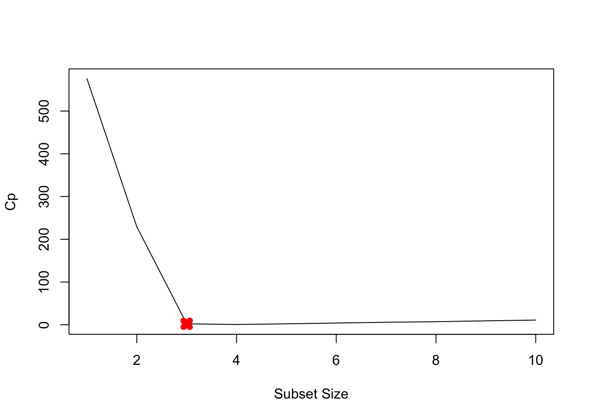
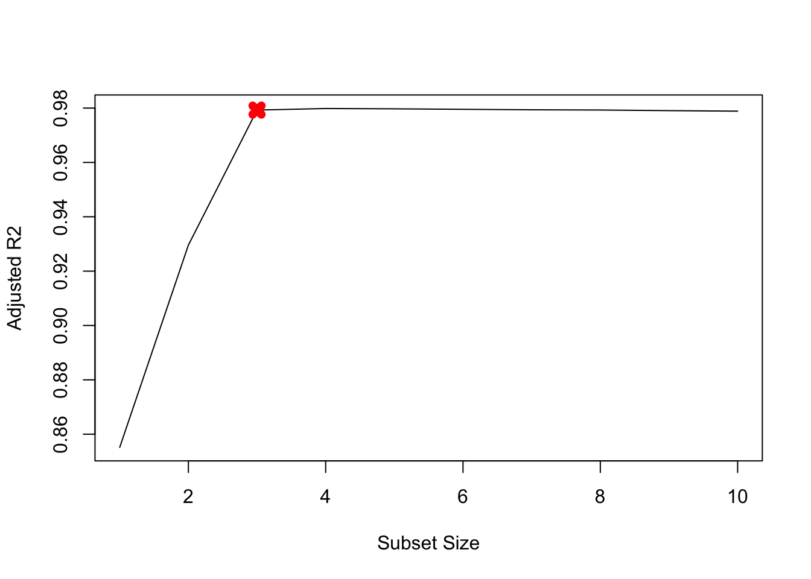
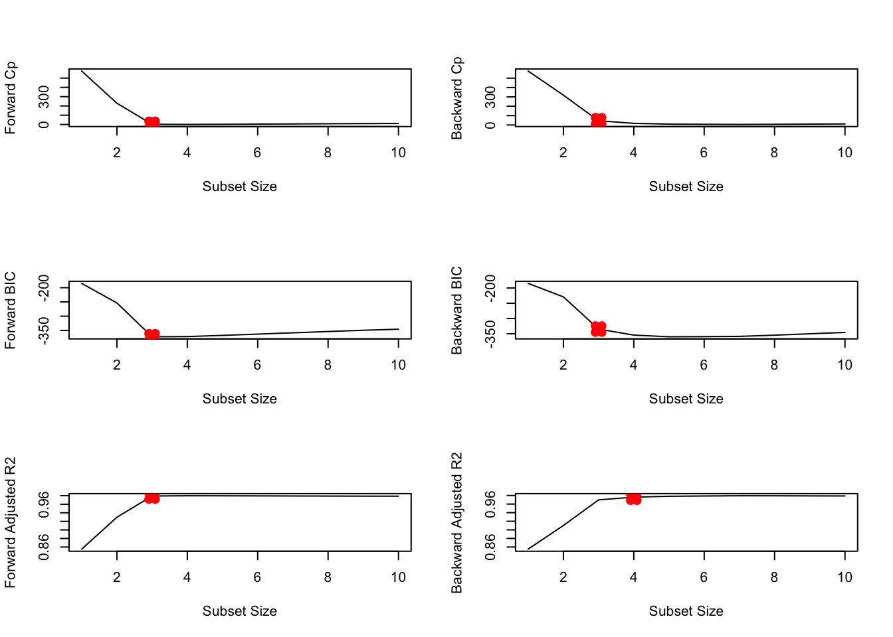

set.seed(1)
X= rnorm(100)
eps = rnorm(100)Assignment 8
From the three methods (best subset, forward stepwise, and backward stepwise):
- Which of the three models with k predictors has the smallest training RSS?
- The best subset method is expected to yield the lowest training RSS as it is chosen from a pool of models containing k predictors.
- Which of the three models with k predictors has the smallest test RSS?
- The best subset approach is expected to result in a smaller test RSS since it considers a larger number of models in comparison to other methods.
Generate simulated data, and then use this data to perform best subset selection.
- The best subset approach is expected to result in a smaller test RSS since it considers a larger number of models in comparison to other methods.
1.Use the rnorm() function to generate a predictor X of length n = 100, as well as a noise vector 𝜀of length n = 100.
2.Generate a response vector 𝑦of length n = 100 according to the model:𝑦=β0+β1𝑥+β2𝑥2+β3𝑥3+ε, where β0,β1,β2𝑎𝑛𝑑β3 are 4, 9, 2, 1 respectively.
Y <- 4 + 9*X + 2*X^2 - 1*X^3 + eps2a. Plot X and Y
plot(X, Y)
3.Use the leaps package
require(leaps)Loading required package: leaps4.Use the regsubsets() function from the leaps packageto perform best subset selection in order to choose the best model containing the predictors. X, X^2 … X^10. Hint: regsubsets(Y~poly(X,10,raw=T), data=data.frame(Y,X), nvmax=10)
df <- data.frame(y=Y, x=X)
fit <- regsubsets(Y ~ poly(X, 10, raw=T), data = df, nvmax = 10)
fit.summary <- summary(fit)
names(fit) [1] "np" "nrbar" "d" "rbar" "thetab" "first"
[7] "last" "vorder" "tol" "rss" "bound" "nvmax"
[13] "ress" "ir" "nbest" "lopt" "il" "ier"
[19] "xnames" "method" "force.in" "force.out" "sserr" "intercept"
[25] "lindep" "nullrss" "nn" "call" 4a. What is the best model obtained according to Cp, BIC, and adjusted 𝑅2?
which.min(fit.summary$cp)[1] 4which.min(fit.summary$cp)[1] 4which.min(fit.summary$cp)[1] 44b. Show some plots to provide evidence for your answer, and report the coefficients of the best model obtained. Note you will need to use the data.frame() function to create a single data set containing both 𝑥and 𝑦.
plot(fit.summary$cp, xlab="Subset Size", ylab="Cp", pch=20, type="l")
points(3, fit.summary$cp[3], pch=4, col="red", lwd=7)
plot(fit.summary$bic, xlab="Subset Size", ylab="BIC", pch=20, type="l")
points(3, fit.summary$bic[3], pch=4, col="red", lwd=7)
plot(fit.summary$adjr2, xlab="Subset Size", ylab="Adjusted R2", pch=20, type="l")
points(3, fit.summary$adjr2[3], pch=4, col="red", lwd=7)
# Finding: With Cp, BIC and Adjusted R2 criteria, 3, 3, and 3 variable models are picked respectively.4c. Find coefficients
coefficients(fit, id=3) (Intercept) poly(X, 10, raw = T)1 poly(X, 10, raw = T)2
4.0615072 8.9752803 1.8762090
poly(X, 10, raw = T)3
-0.9823614 5. Repeat 3, using forward stepwise selection and using backwards stepwise selection. How does your answer compare to the results in 3?
# forward
fit.fwd <- regsubsets(y ~ poly(x, 10, raw=TRUE),
data = df, nvmax = 10,
method="forward")
# backward
fit.bwd <- regsubsets(y ~ poly(x, 10, raw=TRUE),
data = df, nvmax=10,
method="backward")
fwd.summary <- summary(fit.fwd)
bwd.summary <- summary(fit.bwd)
which.min(fwd.summary$cp)[1] 4which.min(bwd.summary$cp)[1] 7which.min(fwd.summary$bic)[1] 3which.min(bwd.summary$bic)[1] 5which.max(fwd.summary$adjr2)[1] 4which.max(bwd.summary$adjr2)[1] 7# Plot the statistics
par(mfrow=c(3, 2))
plot(fwd.summary$cp, xlab="Subset Size", ylab="Forward Cp", pch=20, type="l")
points(3, fwd.summary$cp[3], pch=4, col="red", lwd=7)
plot(bwd.summary$cp, xlab="Subset Size", ylab="Backward Cp", pch=20, type="l")
points(3, bwd.summary$cp[3], pch=4, col="red", lwd=7)
plot(fwd.summary$bic, xlab="Subset Size", ylab="Forward BIC", pch=20, type="l")
points(3, fwd.summary$bic[3], pch=4, col="red", lwd=7)
plot(bwd.summary$bic, xlab="Subset Size", ylab="Backward BIC", pch=20, type="l")
points(3, bwd.summary$bic[3], pch=4, col="red", lwd=7)
plot(fwd.summary$adjr2, xlab="Subset Size", ylab="Forward Adjusted R2", pch=20, type="l")
points(3, fwd.summary$adjr2[3], pch=4, col="red", lwd=7)
plot(bwd.summary$adjr2, xlab="Subset Size", ylab="Backward Adjusted R2", pch=20, type="l")
points(4, bwd.summary$adjr2[4], pch=4, col="red", lwd=7)
# Finding: All statistics pick 3 variable models except for backward stepwise adjusted R2. # Coefficients
coefficients(fit.fwd, id=3) (Intercept) poly(x, 10, raw = TRUE)1 poly(x, 10, raw = TRUE)2
4.0615072 8.9752803 1.8762090
poly(x, 10, raw = TRUE)3
-0.9823614 coefficients(fit.bwd, id=3) (Intercept) poly(x, 10, raw = TRUE)1 poly(x, 10, raw = TRUE)3
4.7873698 9.2517551 -1.1050005
poly(x, 10, raw = TRUE)4
0.4048019 coefficients(fit.fwd, id=4) (Intercept) poly(x, 10, raw = TRUE)1 poly(x, 10, raw = TRUE)2
4.07200775 9.38745596 1.84575641
poly(x, 10, raw = TRUE)3 poly(x, 10, raw = TRUE)5
-1.44202574 0.08072292